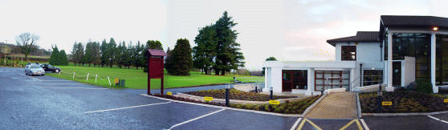

Golf

The Clonmel Golf Club was founded in 1911 and the nine hole
course was laid out in the verdant valley, cutting its way into
the Comeragh foothills. Founder members were the late Earl of
Donoughmore, the late Duchess of St Albans and the late Villiers
Morton-Jackson, Powerstown Park. It's first professional and groundsman
was a man named Marsh, who lived in the original Pavilion, built in 1912.
The clubs first President was the Duchess of St Albans, and the following
account of the official opening, which took place on Thursday, 11th July 1912,
was recorded in " The Nationalist ", dated Saturday 13th July 1912:
" On Thursday afternoon the links of the newly-formed Clonmel Golf Club
was opened by her Grace, the Duchess of St Albans. The Club was only established
early this year, but under progressive management it has made rapid headway, and
now includes nearly two hundred members. The links, which are charmingly situated
at the head of Glenmorgan in the hills south of Clonmel, and about two and a half
miles from town, have been much used by members for months past, but now the grounds
are pretty fully equipped and in grand trim and a neat little Pavilion has been erected
also, where tea and light refreshments are obtainable. A splendid commencement has been
made and the club is bound to flourish, because golf in such delightful and healthy
surroundings will have special attraction to votaries of the pastime.
New 18 Hole Course
It is far to say that it is the ambition of every 9-hole golf club to expand to an 18-hole one. In this connection the dreams and aspirations of the Clonmel Club were realised on June 15th, 1973, when Mr Paddy McPolin, President of the Golfing Union of Ireland, formally opened our new 18-Hole course.
One of the principle obstacles to an earlier extension to 18 holes was the non-availability of suitable land adjoining the old course. It was not until 1969 that the vital six acres of link land adjoining the boundary fence at the old 8th hole became available and due to the initiative and drive of Dr Jim Morrison the negotiations for the purchase of the land were successful. Further land was also purchased on the town side, adding 71 acres to the course. This land was subsequently surveyed by Mr Eddie Hackett, the well know golf architect, and after several visits to Clonmel plans were drawn up for the new 18-hole course. These plans resulted in the remodelling of the old 4th, now the 13th, and the scrapping of the old 5th, 6th, and 8th, which were replaced by superior holes in the new 14th, 15th and 17th. Preliminary construction work commenced in April 1970. Gilbert Howley commenced construction work on holes 3, 8 and 9 in August 1970 and a considerable amount of drainage was involved.
Much of this preliminary work, which consisted of filling in drains and stone-picking, was undertaken by groups of members working three nights a week through Spring and Summer. They were aided by Brother Harry Johnson and a group of boys from Ferryhouse. These young lads, who became popularly known as " Johnsons Fusiliers", trudged up the two miles from Ferryhouse night after night and did trojan work on the course, which was much appreciated by the club.
Early in May 1971, work commenced on the construction of the greens and tees. The seeding of the fairways and roughs was completed by late May and the seeding of all the greens was completed by September 1971. The entire project was most satisfactory.
The whole development was carried out under the supervision of Kevin Higgins and but for his dedication and hard work the members would not now be enjoying the benefits, golfing facilities and amenities offered by an 18-hole course.